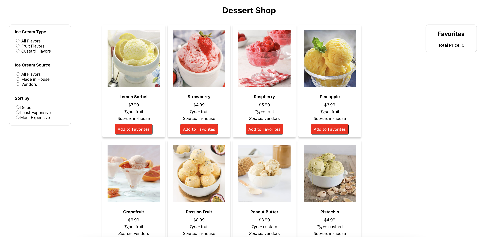
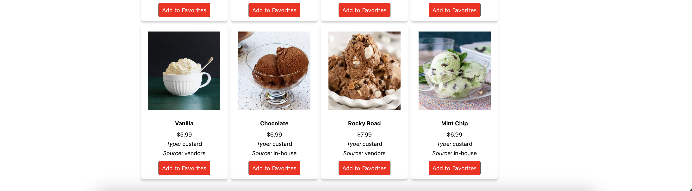

This project focused on developing an interactive interface using React for CSCI1300: User Interface and User Interaction. Our task was to create an interactive interface, use interface components, and tie the components to an internal data state. I choose to develop a dessert shop website.
The goal of the application is to provide a way for people to browse different ice cream/sorbet flavors for a dessert shop. This website allows users to browse different flavors and filter the flavors by the ice cream type (fruit or custard) and by where the ice cream was made (in-house or sourced from a vendor). The website also sorts the flavors by most expensive and least expensive to allow users to choose their flavor based on their budget.
For the web app, the assignment had the following requirements:
After several iterations, this is the final website linked here. Below is the screenshots of the website.
 Usability Principles Considered
I tried to make the layout have good usability by deciding to have the buttons as radio buttons for the filters instead of checkboxes or regular buttons. Originally, I had the default buttons for the filters but this made it really difficult for the user to know which filter was selected. This helped with memorability because it allows the user to remember which filter and sort were selected.
I also made it so that the filter buttons and sort buttons are on the left side, the content in the middle, and the favorite items on the right side. I did this to have quick learnability. This helps the user read from left to right and makes the website intuitive to navigate.
For usability, I decided to go with a simple white background so that the images of the ice cream really pop out. Since there were no distracting background colors, I think this drew the user’s attention toward the ice cream flavors.
Organization of Components
My components are the Favorite List and the Ice Cream Item. The Favorite List is the favorite ice cream items that automatically sum up the total price of the ice cream in the list. The prop gets passed into this function is the cartState which is a list of ice cream items and their prices. The Ice Cream Item has two props. The item which contains all the data regarding the ice cream item and the addToFavorites function which is a function that enables the user to add the ice cream cart to the Favorites list.
From this project, I was able to develop a website using React. Specifically, I learned a lot about interface components, internal data state, and prop parameters. From this, I learned how to create more dynamic websites and I hope to use React more frequently in the future to create more responsive websites.